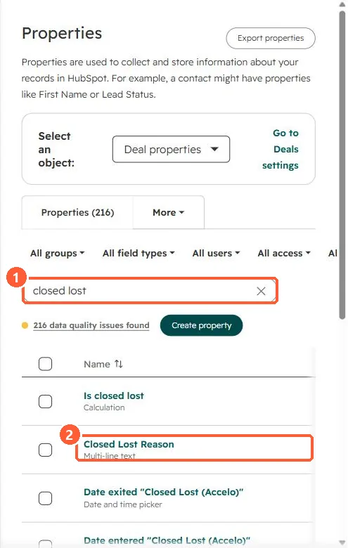

Short answer
Closed lost reason is a default deal property (with a matching Closed won reason). In my demo portal it is a multi-line text field, which is hard to group in reports. HubSpot's KB links to customizing its options, and validation rules can apply to it. To make reps fill it in, add a conditional stage rule on the closed lost stage. Note that a rejected deal approval can only move to closed lost.
1. The property
Deal properties in my demo portal, searched for closed lost.


2. Make it reportable
- Use a short fixed list of reasons, plus Other with a notes field.
- Require it on the closed lost stage. See conditional stage properties.
3. Related
Closing stale deals and deal approvals.